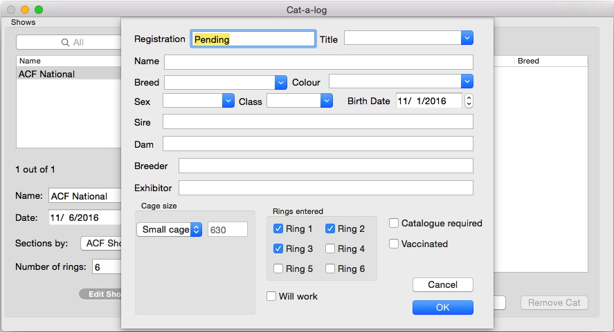

The computer will may some guesses of what you mean while you are typing. These will appear after the typing caret, outlined in yellow. If they are what you want, press the right arrow key (not tab) to accept them. If they are not, just ignore them and keep typing. There is no need to press delete.
Sometimes you can override whatever the computer suggests, and type whatever you want. However, there are certain fields in which you MUST stick to one of the computer's choices - like breed of the cat, which must be a recognized QFA breed.